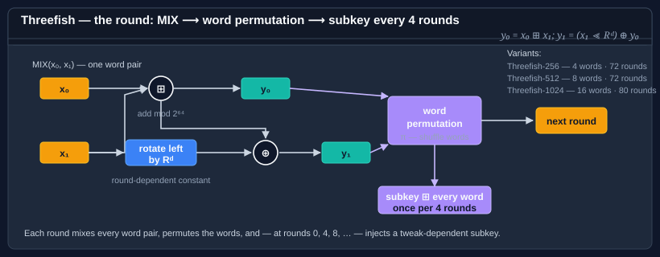

Using Threefish-256
Threefish256 is the 256-bit variant of the Threefish tweakable block cipher family — the core primitive underneath the Skein hash function. It operates on 256-bit (32-byte) blocks with a 256-bit (32-byte) key and a 128-bit (16-byte) tweak.

Note
Encrypt/decrypt ships an AVX-512 fast path that engages automatically on supporting hardware. See Hardware acceleration & SIMD opt-out for when it runs and how to force the scalar path.
Fixed sizes at a glance
| Parameter | Size | Notes |
|---|---|---|
| Block size | 256 bits (32 bytes) | Ciphertext is a multiple of 32 bytes (except in stream modes). |
| Key size | 256 bits (32 bytes) | Fixed — there is no shorter or longer key variant. |
| Tweak size | 128 bits (16 bytes) | Fixed across the Threefish family. |
| IV size | 256 bits (32 bytes) | Always matches the block size. |
Encrypt and decrypt — CBC + PKCS7
The default configuration. Use this unless you have a specific reason to pick a different mode.
using System.Diagnostics;
using System.Linq;
using System.Security.Cryptography;
using System.Text;
using Bodu.Security.Cryptography;
using Bodu.Security.Cryptography.Extensions;
byte[] plaintext = Encoding.UTF8.GetBytes("a message to protect");
// Encrypt
byte[] key, iv, tweak, ciphertext;
using (var alg = new Threefish256 { BlockMode = CipherModeKind.CBC, Padding = PaddingMode.PKCS7 })
{
alg.GenerateKey();
alg.GenerateIV();
alg.GenerateTweak();
key = alg.Key; // 32 bytes
iv = alg.IV; // 32 bytes
tweak = alg.Tweak; // 16 bytes
ciphertext = alg.Encrypt(plaintext);
}
// Decrypt — supplying the same Key, IV and Tweak
byte[] recovered;
using (var alg = new Threefish256 { BlockMode = CipherModeKind.CBC, Padding = PaddingMode.PKCS7,
Key = key, IV = iv, Tweak = tweak })
{
recovered = alg.Decrypt(ciphertext);
}
Debug.Assert(plaintext.SequenceEqual(recovered));
The IV and tweak are not secret — they travel with the ciphertext. The key is the secret; store it separately.
Encrypt and decrypt — CTR (stream mode, parallelisable)
CTR gives you random-access seeking and no padding expansion. Through the Threefish256
wrapper, PaddingMode.None still requires block-aligned input (a multiple of 32 bytes); for
arbitrary lengths drive CtrModeTransform directly, which
accepts a trailing partial block (see Modes, transforms, and factories):
using var alg = new Threefish256
{
BlockMode = CipherModeKind.CTR,
Padding = PaddingMode.None, // CTR doesn't pad — input must be block-aligned here
};
alg.GenerateKey();
alg.GenerateIV(); // initial counter block
alg.GenerateTweak();
byte[] aligned = new byte[64]; // two 32-byte blocks
RandomNumberGenerator.Fill(aligned);
byte[] ciphertext = alg.Encrypt(aligned); // same length as the input
byte[] recovered = alg.Decrypt(ciphertext);
Debug.Assert(aligned.SequenceEqual(recovered));
Do not reuse an (IV, Key) pair across messages in CTR. CtrModeTransform detects counter wrap-around and throws, but it cannot prevent you from using the same initial counter twice.
What the tweak is — and why it is not an IV
Threefish is a tweakable block cipher: it derives from TweakableSymmetricAlgorithm, which adds a Tweak property and GenerateTweak() on top of the standard SymmetricAlgorithm surface. The 128-bit tweak is mixed into every round's subkey schedule, so changing it produces an effectively different permutation under the same key — without the cost of re-running a key schedule. That is what makes it "tweakable" rather than merely "another input".
Contrast it with the three other inputs:
| Input | Mixed into | Must vary per message? | Secret? |
|---|---|---|---|
| Key | The subkey schedule | No (rotate on a policy) | Yes |
| IV | The mode's chaining (CBC) or counter (CTR) | Yes | No |
| Tweak | Every round's subkey | No — vary it per domain, not per message | No |
The practical consequence: the IV gives you per-message freshness, while the tweak gives you per-context (per-record, per-sector, per-field) separation that is stable across messages. You typically set the tweak once per logical lane and let the IV change per message within that lane. The tweak is fixed at 128 bits across all three Threefish variants — LegalTweakSizes advertises this, and GenerateTweak() fills 16 random bytes.
Using the tweak as a domain separator
The tweak lets you derive many independent encryption "lanes" from the same key. Two messages encrypted with the same key but different tweaks produce completely unrelated ciphertext:
byte[] key = new byte[32];
RandomNumberGenerator.Fill(key);
byte[] Encrypt(byte[] plaintext, byte[] iv, byte[] tweak)
{
using var alg = new Threefish256 { Key = key, IV = iv, Tweak = tweak };
return alg.Encrypt(plaintext);
}
byte[] iv = new byte[32];
RandomNumberGenerator.Fill(iv);
// Same key, same IV, same plaintext — different tweaks → unrelated ciphertext.
byte[] userTweak = Encoding.UTF8.GetBytes("user-records\0\0\0\0"); // 16 bytes
byte[] sessionTweak = Encoding.UTF8.GetBytes("session-keys\0\0\0\0");
byte[] c1 = Encrypt(plaintext, iv, userTweak);
byte[] c2 = Encrypt(plaintext, iv, sessionTweak);
// c1 and c2 are unrelated.
A common pattern is to set the tweak to a record ID, a filesystem path, or a message counter, so that even if the same plaintext appears in two places, their ciphertexts are independent.
File encryption
using var alg = new Threefish256 { BlockMode = CipherModeKind.CBC, Padding = PaddingMode.PKCS7 };
alg.GenerateKey();
alg.GenerateIV();
alg.GenerateTweak();
using (var src = File.OpenRead("report.bin"))
using (var dst = File.Create("report.enc"))
{
// Write IV + tweak as a header so the receiver can decrypt.
dst.Write(alg.IV); // 32 bytes
dst.Write(alg.Tweak); // 16 bytes
alg.Encrypt(src, dst, bufferSize: 8192);
}
// Store alg.Key separately in your secrets vault.
Decryption reverses the header:
byte[] iv, tweak;
using var src = File.OpenRead("report.enc");
iv = new byte[32]; src.ReadExactly(iv);
tweak = new byte[16]; src.ReadExactly(tweak);
using var alg = new Threefish256
{
BlockMode = CipherModeKind.CBC,
Padding = PaddingMode.PKCS7,
Key = LoadKeyFromVault(),
IV = iv,
Tweak = tweak,
};
using var dst = File.Create("report.recovered.bin");
alg.Decrypt(src, dst, bufferSize: 8192);
Relationship to Skein, and the raw primitive
Threefish is not only a stand-alone cipher — it is the permutation at the heart of the Skein hash function (Skein256), which runs Threefish in UBI mode. The tweak that this guide uses for domain separation is the same mechanism Skein uses to bind each block's position and type into the hash. That shared lineage is why the three Threefish block sizes (256 / 512 / 1024) line up exactly with the three Skein digest families.
The SymmetricAlgorithm wrapper shown above is built on the raw Threefish256Cipher, an IBlockCipher whose constructor takes the key and the tweak directly:
using IBlockCipher cipher = new Threefish256Cipher(key, tweak); // 32-byte key, 16-byte tweak
IBlockCipherModeTransform mode = BlockCipherModeFactory.Create(CipherModeKind.CTR, cipher, iv);
Reach for the primitive when you need to share one keyed-and-tweaked engine across mode transforms; see Composing primitives.
Note
The Threefish family's smallest block is 256 bits, so it cannot drive the 128-bit-block AEAD transforms (GCM, OCB, …). For authenticated encryption either pair Threefish-CTR with a MAC (encrypt-then-MAC) or use the AES-based AEAD modes.
Where to go next
- Encryption basics — the Key/IV/Tweak lifecycle.
- Cipher block modes — CFB / OFB / ECB also work with
Threefish256. - Padding — when to set
PaddingMode.NonevsPKCS7. - Composing primitives —
Threefish256Cipher+ mode + padding by hand. - Other variants: Threefish-512, Threefish-1024.
- Hashing & Cryptography guides — every guide in this topic, across Bodu.IO.Hashing and Bodu.Security.Cryptography.